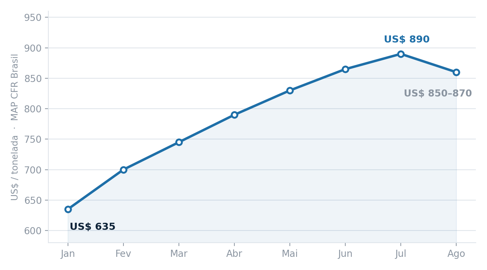
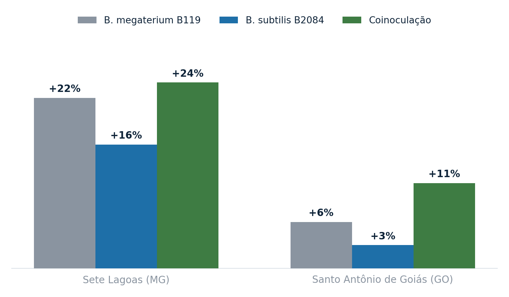

A conta do fósforo apertou em 2026. O MAP, principal fonte usada no Brasil, começou o ano em torno de US$ 635 por tonelada e chegou a bater perto de US$ 890 em julho. No fim de agosto veio uma acomodação, com o produto negociado na faixa de US$ 850 a US$ 870 CFR Brasil, ajudada pela maior oferta física no país e pela proximidade do plantio da soja. Mesmo assim, o patamar continua muito acima do início do ano.

Por que o fosfato subiu tanto
A pressão veio de várias frentes ao mesmo tempo. A China, maior exportadora mundial de MAP e DAP, manteve política de restrição às exportações para priorizar o abastecimento interno, medida em vigor até agosto de 2026. A Rússia segue limitando exportações de nitrogenados em meio ao conflito com a Ucrânia, e a tensão no Oriente Médio elevou frete, seguro marítimo e prêmio de risco nas rotas do comércio global de fertilizantes.
Somou-se a isso um fator menos visível: o enxofre, matéria-prima essencial na fabricação de fosfatados, saltou de US$ 435 para US$ 1.152 por tonelada desde o início do ano, puxado também pela demanda da indústria de baterias, que consegue pagar mais pelos carregamentos. A pressão foi tanta que a Mosaic anunciou em julho uma redução temporária de parte das operações no Brasil.
Como o país importa a maior parte do fosfato que consome, cada um desses choques chega rápido ao custo por hectare. Na prática, o produtor precisa entregar hoje o equivalente a duas a quatro sacas adicionais de soja para comprar a mesma quantidade de fertilizante que compraria um ano atrás.
Mais de 80% das compras de fertilizantes para a soja 2026/27 já estavam fechadas até o fim de julho, com Mato Grosso em 95%, Paraná em 92% e Goiás em 90%. A decisão que continua aberta é a do milho safrinha 2027, com apenas 35% do volume contratado.
O problema é que o preço só torna mais caro
Existe um dado que muda a leitura de tudo isso: estudos indicam que apenas 15% a 30% do fósforo aplicado via fertilizante é absorvido pelas plantas a cada ciclo agrícola. O restante fica retido no solo, ligado a argilominerais e a óxidos de alumínio, ferro e cálcio, em formas que a raiz não acessa.
Ou seja, o produtor está pagando o preço mais alto dos últimos anos por um nutriente que, em boa parte, não chega ao seu destino. Quando o insumo estava barato, essa ineficiência era absorvida pela margem. Com MAP acima de US$ 850, ela vira uma linha relevante no custo.
A rota biológica: solubilizar o que já está lá
É exatamente nesse ponto que entram as bactérias solubilizadoras de fosfato. Duas estirpes desenvolvidas pela Embrapa Milho e Sorgo têm o histórico de validação mais consistente no Brasil: Bacillus megaterium CNPMS B119 e Bacillus subtilis CNPMS B2084.
O mecanismo não é adicionar fósforo, e sim destravar o que já está imobilizado no solo. As duas estirpes solubilizam e mineralizam fosfatos, produzem fosfatases, sideróforos, exopolissacarídeos, biofilmes e moléculas análogas ao ácido indol-3-acético, que estimulam o desenvolvimento radicular. A B2084 apresenta alta capacidade de aderência às raízes da planta, a B119 tem capacidade de solubilizar fosfatos de cálcio e de rocha.
Um ponto prático relevante para quem monta o pacote de tratamento de sementes: nos ensaios não foi observado antagonismo com Azospirillum nem com Bradyrhizobium, o que permite combinar as tecnologias sem perda de compatibilidade.
O que os números de campo mostram
Ao longo de cinco safras, em duas áreas experimentais, a inoculação via tratamento de sementes elevou a produtividade de grãos de milho de forma consistente. Aplicadas isoladamente, a B119 e a B2084 entregaram ganhos médios de 22% e 16% em Sete Lagoas (MG) e de 6% e 3% em Santo Antônio de Goiás (GO). A coinoculação das duas estirpes foi mais eficiente que qualquer uma sozinha: 24% em Sete Lagoas e 11% em Santo Antônio de Goiás, sempre em comparação ao controle não inoculado.

No recorte econômico, avaliações da Embrapa com a dose de 100 mL/ha aplicada na semente apontaram retorno médio de 7 vezes o custo de aplicação no milho e 6,1 vezes na soja. A tecnologia tem registro no Mapa para milho e, desde 2021, também para soja.
O que fazer com isso na safra 2026/27
Com a maior parte da compra de fosfatados para a soja já fechada, a janela de decisão desta safra migrou para extrair mais de cada quilo de P que já foi contratado. É aí que a inoculação com solubilizadores tem o melhor encaixe, atuando sobre o fósforo residual do solo e sobre a fração do fertilizante que seria imobilizada.
Para o milho safrinha 2027, com apenas 35% do volume contratado, a conversa é diferente e mais estratégica, dá para desenhar o pacote considerando a contribuição biológica desde o início, em vez de encaixá-la depois. E a recomendação de mercado para o fósforo neste momento é avançar de forma fracionada, aproveitando o recuo atual sem apostar que ele continue.
Qual estratégia adotar?
Em um ano de fosfato caro e riscos climáticos, eficiência de uso deixa de ser argumento de sustentabilidade e vira argumento de caixa. Quem tratar solubilizadores como custo a mais perde a conta, quem tratar como ferramenta de aproveitamento do que já está pago tende a fechar a safra com uma margem diferente.